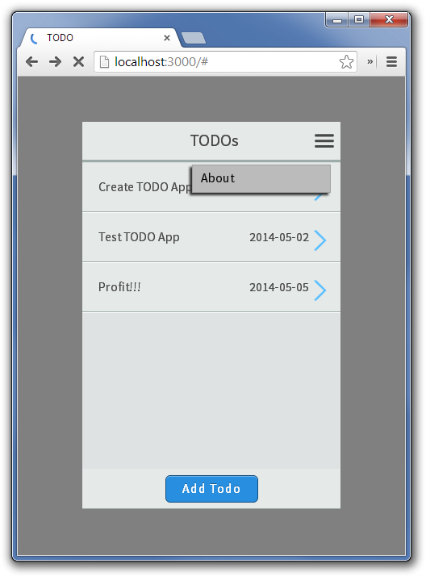
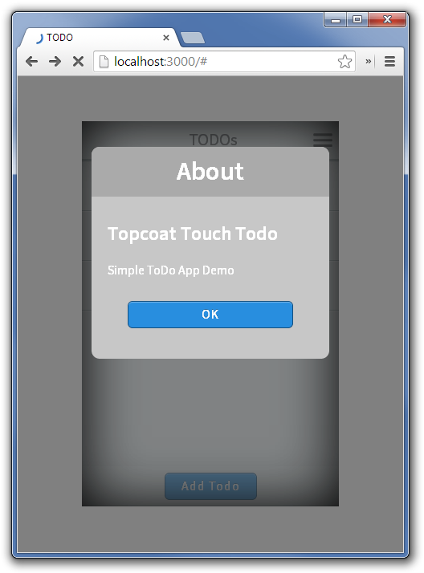

TODO Single Page - Part 3
What is to be achieved
We are continuing on from
Tutorial 2, in this tutorial we will wrap
up this tutorial by spending some time discussing the grunt file. We will add the ability to edit and
delete ToDo's, do some simple swipe handling, and throw in an About Page.
Grunt
When we used Yeoman to create our project, it helpfully created a Gruntfile for us. What that gruntfile does
depends on whether or not we have included Phonegap in the project. If we haven't included phonegap it
is basically just a skeleton of a gruntfile that provides an HTTP server (which is the default action even if Phonegap is included).
While this isn't a tutorial on
Grunt, let's quickly look at what we have included:
'http-server': {
dev : {
port: 3000,
root: './app/'
}
}
Is the clip of code that creates the HTTP server, feel free to change it's port if 3000 conflicts with another
application.
There are two more grunt commands that are created for you that you should know about how they work: 'debug', 'debug-cordova'.
- debug-cordova
- This places a debug version (non-minimized) of all of the files into the ./cordova/www directory. Once
this is done, you can run
$ cordova prepare in the cordova directory to build application.
- cordova
- This places a production version (minimized css, and javascript) into the ./cordova/www directory.
There are a few of things to note about these commands:
- The dist directory is used as a scratchpad directory when building the production output, check there to see if anything went wrong
- Javascript files are included from the libs directory and the js directory, but in random order so you should wrap any javascript that
requires functionality to be loaded in a document.ready OR rewrite the grunt file to join the files in the order you require
- Development html is included between the
<!-- @@DEVELOPMENT@@ --> comments and production
html is included between the <!-- @@PRODUCTION@@ --> comments. This little hack is performed
by the transform_html grunt task
As the Yeoman generator becomes more robust, more commands will be added but for now that is what you need to know.
Editing ToDo's
Now let's get back to our application. We are now on
stage-3 but when we
are done editing we will be at
stage-4.
The first thing we need to do is add an edit button. Since eventually we are going to need to delete toDo's lets
add that at the same time. Place the following html in the index.html at the end of the #toDoView div.
<div class="topcoat-bottom-bar">
<div class="topcoat-bottom-bar-item full center">
<button class="topcoat-button--cta" id="editButton">Edit Todo</button>
<button class="topcoat-button--cta" id="deleteButton">Delete Todo</button>
</div>
</div>
Next we need to update our javascript a little. Underneath the creation of hte TopcoatTouch object add two more variables,
a toDo which will be our current toDo, and a state (whether we are editing or creating a new ToDo).
var toDo;
var state;
Now in the todo click handler, remove that var reference so that ToDo is global to the scope of the entire document.ready function
$('#todoList').on('click', 'li[data-id]', function() {
var toDo = toDoService.getToDo($(this).data('id'));
becomes
$('#todoList').on('click', 'li[data-id]', function() {
toDo = toDoService.getToDo($(this).data('id'));
In the addButton click handler add a line setting the state to 'new';
state = 'new';
Add a handler for the edit button:
$('#editButton').click(function() {
state = 'save';
$todoEdit.find('.header').text('Edit ' + toDo.name);
$todoEdit.find('#nameInput').val(toDo.name);
$todoEdit.find('#dueDateInput').val(toDo.dateDueString());
$todoEdit.find('#detailsTextarea').val(toDo.details);
tt.goTo($todoEdit);
});
Also make some small changes to the save button, remove the toService.add line:
toDoService.addToDo($('#nameInput').val(), $('#detailsTextarea').val(), $('#dueDateInput').val());
And add some lines that handle either adding or editing a todo:
var name = $('#nameInput').val();
var details = $('#detailsTextarea').val();
var dueDate = $('#dueDateInput').val();
if (state == 'new') {
toDoService.addToDo(name, details, dueDate);
} else {
toDo.name = name;
toDo.details = details;
toDo.dueDate = dueDate;
}
And we should now be able to test editing a ToDO. Fire up the http service (through grunt) if it's not already
running and make sure everything works the way it should.
Now that we can add and edit toDo's, the last step of
CRUD is to be able to delete them.
Let us separate out the deleting into its own function (we are going to reuse it later, so lets seperate it now):
function deleteToDo(delToDo) {
toDoService.removeToDo(delToDo);
toDoService.save();
createToDoList();
tt.goTo('#home');
}
Now we need a delete button click handler:
$('#deleteButton').click(function() {
deleteToDo(toDo);
});
Test again, and be sure to reload the page every now and then to make sure our changes are actually stored from
session and not completely ephemeral.
Finishing the Application
While no app is really ever finished, we are going to put some finishing touches
on this ToDo app and then put a fork in it. First we are going to duplicate the functionality that many
mobile users expect when swiping from left to right on a list item, showing a delete button and a way
to delete the ToDo. This uses the functionality it Hammer.js to get the swipe so it becomes a very
few short lines of code:
function showDeleteButton() {
// reference the just swiped list item
var $li = $(this);
var toDoId = $li.data('id');
// create buttons and div container
var $deleteBtn = $('<button class="deleteButton topcoat-button">Delete</button>');
$deleteBtn.css({opacity: 0})
.bind('click', function () {
$deleteBtn.remove();
deleteToDo(toDoStorage.getToDo(toDoId))
});
// insert swipe div into list item
$li.prepend($deleteBtn);
$deleteBtn.animate({opacity: 1}, 150);
return false;
}
tt.on('swiperight', 'li', 'home', showDeleteButton);
tt.on(tt.EVENTS.PAGE_END, 'home', function() {
$('.deleteButton').remove();
});
Let's quickly go over what this code is doing. The showDeleteButton function acts in response to swipe event
to dynamically create a button, bind it to a click event that calls the deleteToDo function we wrote earlier,
and appends it to the current list item. It then fades itself in using jQuery animate. Underneath the showDeleteButton function
we use the event delegation features of TopcoatTouch to bind to the swiperight event and the pageEnd event. Note
that TopcoatTouch event delegation takes up to four parameters, the first being the event. TopcoatTouch supports
all jQuery events (click, mousedown, mouseup, touchstart, touchend, change, etc) as well as all Hammer.js
events (swiperight, swipeleft, drag, tap, doubletap, hold, roate, pinch, etc),
as well as several TopcoatTouch only
events (PAGE_START, PAGE_END,
SCROLL_START, SCROLL_END, SHOW_MENU, MENU_ITEM_CLICKED). The second argument being an optional element to react to (for
example we are only reacting to li that are swiped). The third argument is also optional and is the page to react to,
so in the above code we are only reacting to events on the home page. The last argument is the function to execute (note:
that TopcoatTouch event delegation returns the target elment as this, exactly as jquery does.
To have our button look reasonable, and be in the right place, we need to sprinkle some CSS magic into our style.css (feel
free to place it at the bottom.)
.deleteButton {
position: absolute;
right: 41px;
width: 100px;
height: 28px;
line-height: 28px;
background: #A00;
color: #FFF;
text-shadow: none;
box-shadow: none;
top: 19px;
}
.deleteButton:hover {
background: #933;
}
Now is a good time to test our swipe to delete functionality. Note: You will either need a mobile device or use the
emulation mode of Chrome or Opera to get swiping to work, as swipe is not a standard action for desktop browsers.
The last thing we are going to do is quickly add a menu, and an about dialog.
Go back to the index.html and add an about page at the bottom before the final closing body tag.
<div data-role="dialog" id="about">
<div class="topcoat-touch-dialog">
<div class="topcoat-touch-header">
<h1>About</h1>
</div>
<div class="topcoat-touch-dialog-content">
<div>
<h2>Topcoat Touch Todo</h2>
<p>Simple ToDo App Demo</p>
</div>
<div class="topcoat-touch-grid buttons">
<div class="full center">
<button class="topcoat-button--cta back-button">OK</button>
</div>
</div>
</div>
</div>
</div>
Next we have to add some options to our TopcoatTouch constructor to tell it about our menu:
var tt = new TopcoatTouch({menu: [{id: 'about', name: 'About'}]});
There are other options you can set in the TopcoatTouch constructor, see the
docs for
more information.
Next we need to handle the menu item clicked event for the about menu item:
tt.on(tt.EVENTS.MENU_ITEM_CLICKED, function(page, id) {
if (id == 'about') {
tt.goTo('about', 'pop', true);
}
});
Next a tiny bit of css gets tucked at the bottom of our style.css:
#about {
color: #fff;
}
Hit reload on our little mobile app, and see that the Menu that was there all long, is finally functional:

And clicking on it, gives us a nice little pop-up:

Doing Things the TopcoatTouch Way
If you have looked at the latest version of the TopcoatTouchTodo app you will notice a few more small changes,
all of the event handlers are done with TopcoatTouch event delegation rather than jQuery click handlers. For
example the addButton click handler has changed from:
$('#addButton').click(function() {
to
tt.on(tt.clickEvent, '#addButton', 'home', function() {
While not necessary in any way, if you do all of your event handling through the topcoatTouch interface
you may find it produces a more unified experience. Also not the tt.clickEvent, which is not necessary if
you have included fastclick, it is necessary if you have not and you wish your application to work in a non
touch enabled as well as a touch enabled environment.
Getting ready for testing
You've probably noticed that our application is not very well structured, it only uses 2 modules (and
the toDoService is jammed into the global window, a terrible practice) and isn't very well organized in
general. I will argue that a lot of the reason for that is:
- It was written as a tutorial to slowly build on simple ideas.
- It is a very simple application.
- TopcoatTouch is not designed for very large applications (especially the single
document for of TopcoatTouch)
All of which are kind of feeble augments, but for the single document tutorial we are not going to spend
any time fixing any of the architectural problems with our ToDo app, but we are going to remove our
ToDo service from the global window and make it slightly testable. Since we are not going to introduce
a real
IOC container or any kind of
dependency injection into this simple app, we are going to rely on the programmers best friend,
Duct Tape. First lets take the
ToDoService off of the global object and at least make it instantiable class.
Change this:
window.toDoService = new (function ToDoService() {
to this:
window.ToDoService = function ToDoService(localStorage) {
What we are doing is a little subtle, we are change the toDoService from an immediately instantiated
object to a constructor (class). We are also accepting a single argument which is our localStorage
object which we can then mock out for easy testing.
next we have to change our localStorage accessor (this is unfortunate since if we had thought this
through at the beginning the change wouldn't have been necessary), but this:
if (window.localStorage.getItem('todos')) {
var toDoPojos = JSON.parse(window.localStorage.getItem('todos'));
becomes:
if (localStorage['todos']) {
var toDoPojos = JSON.parse(localStorage['todos']);
This is a really minor change that allows us to simplify our Mock of the localStorage object and just
pass in a plain object rather than have to somehow create a pseudo array that does setting and also
has a getItem function. The last change is also minor, making sure that function isn't immediately executed. Change
})();
to
};
Once again, if all of this is confusing, check out that whole
file on Github.
Now we have to change our app.js file, underneath the creation of our tt TopcoatTouch object add the following:
var toDoStorage = new window.ToDoService(window.injectedStorage ? window.injectedStorage : window.localStorage);
The reference to window.injectedStorage will be for our End2End testing and mocking the localStorage. I personally
don't like having to variables that only differ in capitalization, so I renamed toDoService toDoStorage. If you follow
my lead here you will have to rename every toDoService reference to toDoStorage. If you aren't using a fancy IDE
with refactoring, or don't trust Search and Replace you can simple change the name of toDoStorage to toDoService and
you are done.
Testing The ToDo Service
I've chosen to use Mocha and Phantomjs (in fact a package called mocha-phantomjs) to do my end to end testing,
and using Mocha to do the unit testing. There are a few reasons for this:
- You can do Unit Testing and End2End Testing with the same framework
- It works from a browser and the command line
- It integrates nicely with npm and CI servers like TravisCI
- It is relatively fast compared with solutions like Selenium
You don't have to use this MochaPhantom combination, however the Yeoman Generator will probably start including
it as a default option in the near future. For now you are going to have to do a little work. First, crack
open your package.json and add the following under devDependencies:
"mocha": "1.18.2",
"chai": "1.9.1",
"mocha-phantomjs": "3.3.2"
(Note: these modules change pretty fast, feel free to keep up to date with the latest versions, however I know that
there particular versions work). Also add a new node call scripts, in the package.json
"scripts": {
"test": "mocha-phantomjs TestRunner.html"
}
In your root diretory, run
npm install, to get the new pacakges. Next you have to
create a file in the root of project (the same level as the package.json) called TestRunner.html:
<!DOCTYPE html>
<html>
<head>
<title> Topcoat Touch Tests </title>
<link rel="stylesheet" href="./node_modules/mocha/mocha.css"/>
<script src="./node_modules/mocha/mocha.js"></script>
<script src="./node_modules/chai/chai.js"></script>
<script src="app/libs/topcoat-touch/js/jquery-2.0.3.js"></script>
<script src="app/js/todo-service.js"></script>
<style>
/** Quick hack to make the site visible within the test container... **/
#testContainer {
width: 320px;
height: 480px;
border: 1px solid #000;
position: fixed;
right: 50px;
top: calc(50% - 240px);
}
#testContainer > div {
position: absolute;
top: 9999px;
}
body > div {
position: static;
top: 0;
}
body {
overflow: visible;
}
#mocha {
width: calc(100% - 450px);
}
</style>
<script>
mocha.ui('bdd');
mocha.reporter('html');
var expect = chai.expect;
</script>
<script src="test/testToDoService.js"></script>
<!-- <script src="test/testApp.js"></script> -->
</head>
<body>
<div id="mocha">
</div>
<iframe id="testContainer" src="app/index.html#testing">
</iframe>
<script>
$('#testContainer').on('load', function() {
window.$iframeContents = $('#testContainer').contents();
var $body = window.$iframeContents.find('body');
(function startMocha() {
if ($body.data('startedapp')) {
if (window.mochaPhantomJS) {
mochaPhantomJS.run();
} else {
mocha.setup({globals: ['$']});
mocha.run();
}
} else {
setTimeout(startMocha, 50);
}
})();
});
</script>
</body>
</html>
This file will run all of our tests (both Unit and E2E). For now we are only creating unit tests, so lets create the
tests for toDoService. First create a directory called
test, and add a file called
testToDoService.js, which contains some simple tests of our ToDo service:
describe("Test ToDoService", function () {
var toDoService;
before(function() {
toDoService = new ToDoService({todos: "{\"1\":{\"id\":1,\"name\":\"Test 1 Name\",\"details\":\"Test 1 Details.\",\"dateDue\":\"2014-01-01T00:00:00.000Z\",\"complete\":false}," +
"\"2\":{\"id\":2,\"name\":\"Test 2 Name\",\"details\":\"Test 2 Details\",\"dateDue\":\"2014-05-02T00:00:00.000Z\",\"complete\":true}," +
"\"3\":{\"id\":3,\"name\":\"Test 3 Name\",\"details\":\"Test 3 Details\",\"dateDue\":\"2014-05-05T00:00:00.000Z\",\"complete\":false}," +
"\"4\":{\"id\":4,\"name\":\"Test 4 Name\",\"details\":\"Test 4 Details\",\"dateDue\":\"2014-06-01T00:00:00.000Z\",\"complete\":false}}"});
});
it('should have 4 toDos', function() {
expect(Object.keys(toDoService.getAllToDos()).length).to.equal(4);
});
it('toDo 1 should be named Test 1 Name', function() {
expect(toDoService.getToDo(1).name).to.equal("Test 1 Name");
});
it('toDo 4 should have a details called Test 4 Details', function() {
expect(toDoService.getToDo(4).details).to.equal("Test 4 Details");
});
it('removing toDo should cause 3 toDos to remain', function() {
var removeToDo = toDoService.getToDo(3);
toDoService.removeToDo(removeToDo);
expect(Object.keys(toDoService.getAllToDos()).length).to.equal(3);
expect(toDoService.getToDo(3)).to.equal(undefined);
});
});
We have written some very simple BDD style Mocha tests (if you want a good tutorial on
Mocha, I recommend
the
net-tuts tutorial which is very thorough.
Ok, ready to fire up our tests. You can run them in the browser, or simply by typing
npm test.
$topcoat-touch-todo>npm test
> todo@0.0.1 test topcoat-touch-todo
> mocha-phantomjs TestRunner.html
Test ToDoService
âo" should have 4 toDos
âo" toDo 1 should be named Test 1 Name
âo" toDo 4 should have a details called Test 4 Details
âo" removing toDo should cause 3 toDos to remain
4 passing (4ms)
Woot! It works. Now, let's get to work with end to end testing... This is a lot more complicated, as we have
to deal with some peculiarities of PhantomJS, iframes, and a few hacks to allow us to test without actually touching
local storage. First our local storage hack, which we are going to place into our index.html (right after the
@@DEVELOPMENT@@ comment:
<script>
if (window.location.hash == '#testing') {
window.injectedStorage = {todos: "{\"1\":{\"id\":1,\"name\":\"Test 1 Name\",\"details\":\"Test 1 Details.\",\"dateDue\":\"2014-01-01T00:00:00.000Z\",\"complete\":false}," +
"\"2\":{\"id\":2,\"name\":\"Test 2 Name\",\"details\":\"Test 2 Details\",\"dateDue\":\"2014-05-02T00:00:00.000Z\",\"complete\":true}," +
"\"3\":{\"id\":3,\"name\":\"Test 3 Name\",\"details\":\"Test 3 Details\",\"dateDue\":\"2014-05-05T00:00:00.000Z\",\"complete\":false}," +
"\"4\":{\"id\":4,\"name\":\"Test 4 Name\",\"details\":\"Test 4 Details\",\"dateDue\":\"2014-06-01T00:00:00.000Z\",\"complete\":false}}"};
}
</script>
This hack says that we will create our own
mock of localStorage
when '#testing' is appended to url (see the iframe in TestRunner.html). Now for our next hack, we have to know when
the page is loaded and ready for testing, as testing to soon will cause unpredictable errors. The hacky solution is
to tack a data attribute onto the body when we are loaded. The other option is to create an event sync and broadcast
the event however this can lead to a race condition where if the event broadcasts before we are ready for it the tests
will never run. Append the following to app.js just before the tt.goTo('home') command:
tt.on(tt.EVENTS.PAGE_START, 'home', function() {
$('body').attr('data-startedapp',1);
});
Next we will have to uncomment the testApp.js script. Remove the comment from around that in TestRunner.html.
Now let's write some end to end tests. Create another file in the test folder, called testApp.js. First we will
test that the home page is loaded and it has some events.
describe("Test Home Page", function () {
it('should be on the home page', function() {
expect($iframeContents.find('#home').hasClass('page-center')).to.be.true;
});
it('toDo list should have 4 items', function() {
expect($iframeContents.find('#todoList li').length).to.equal(4);
});
it('toDo list item 1 should be called Test1Name', function() {
expect($($iframeContents.find('#todoList li')[0]).find('.toDoName').text()).to.equal('Test 1 Name');
});
it('toDo list item 3 should had id of 3', function() {
expect($($iframeContents.find('#todoList li')[2]).data('id')).to.equal(3);
});
});
Run our tests:
$topcoat-touch-todo>npm test
> todo@0.0.1 test topcoat-touch-todo
> mocha-phantomjs TestRunner.html
Test ToDoService
âo" should have 4 toDos
âo" toDo 1 should be named Test 1 Name
âo" toDo 4 should have a details called Test 4 Details
âo" removing toDo should cause 3 toDos to remain
Test Home Page
âo" should be on the home page
âo" toDo list should have 4 items
âo" toDo list item 1 should be called Test1Name
âo" toDo list item 3 should had id of 3
8 passing (18ms)